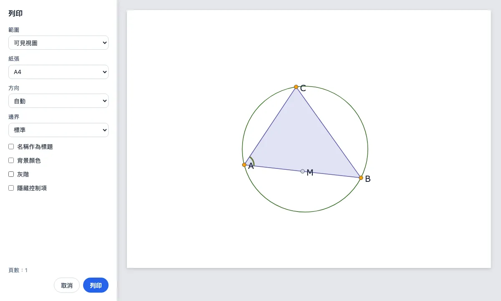
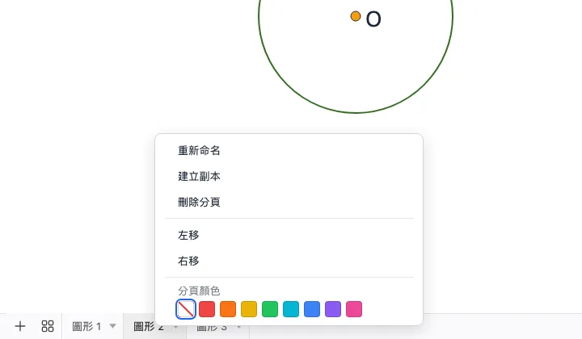

開啟與儲存
開啟
開啟載入一個檔案：
| 副檔名 | 來源 |
|---|---|
.dgo |
DocGeo，原生格式 |
.dgp |
DGPad，匯入 |
.ggb |
GeoGebra，匯入 |
也可以把檔案圖示拖曳到頁面上，編輯器和閱讀器中皆可。
開啟的圖形會取代目前的圖形，並清除復原歷程。
線上圖形也可以透過連結開啟（見透過連結分享圖形）。
檔案選單也提供開啟…（Ctrl O）和新增圖形，後者從空白圖形開始。
最近的文件
檔案 › 開啟最近的文件列出最近開啟或儲存的十個圖形，最新的在最前：在 Chrome 和 Edge 中是電腦上的檔案；在所有瀏覽器中是透過連結開啟的圖形。瀏覽器可能會再次要求讀取該檔案的權限。此後被移動、重新命名或刪除的檔案會顯示提示，並從清單中移除。清除清單會將其清空。
匯入不完整
不支援的 DGPad 或 GeoGebra 元素會連同其依賴物件一起被忽略；提示中會列出它們（「未匯入：…」）。詳見匯入 DGPad 和 GeoGebra 圖形。
儲存
、檔案 › 儲存 或
Ctrl
S 將圖形儲存為.dgo。檢視（縮放、3D
方向、座標系）也會儲存。
在 Chrome 和 Edge 中，DocGeo
像應用程式一樣儲存：第一次儲存時詢問檔案存放位置，之後直接取代該檔案，不再詢問。用開啟或拖放到頁面上的.dgo圖形會儲存回原檔案；瀏覽器會要求一次修改權限。DGPad
或 GeoGebra
圖形絕不會被覆寫：第一次儲存會建立新的.dgo檔案。另存新檔…（Ctrl
Shift S）可選擇另一個檔案。
檔名顯示在選單列末端；紅點表示有未儲存的變更。儲存後，或復原到已儲存的狀態時，紅點消失。移動或縮放檢視不算變更。
在其他瀏覽器（Firefox、Safari）中，或 DocGeo
嵌入其他頁面時，儲存會下載圖形，檔名與開啟的圖形相同（新圖形為figure.dgo）。
.dgo 是唯一的儲存格式：開啟 DGPad 或 GeoGebra
圖形後儲存，即完成轉換。
復原未儲存的圖形
只要圖形有未儲存的變更，DocGeo 就會在瀏覽器中保留一份副本。如果編輯器在儲存之前關閉（誤關視窗、當機），該圖形會帶著日期出現在檔案 › 開啟最近的文件頂端的未儲存的圖形下：選擇它，圖形就會回來，仍標示為未儲存。這些副本保留十四天，最多十份；清除清單也會刪除它們。
此副本只保留在這台電腦的瀏覽器中：它不能取代儲存。DocGeo 嵌入其他網頁時不保留任何內容。
列印
檔案 › 列印…（Ctrl P）在設定旁顯示各張紙的預覽。接著列印開啟瀏覽器的列印視窗，也可以另存為 PDF。

圖形填滿整張紙，直到邊界：直線和曲線一直畫到邊緣。開始時圖形從不放大：線條和標籤保持螢幕上的大小。
- 在紙上拖曳可移動圖形，滑鼠滾輪可縮放圖形。編輯器的視圖不變。
- 範圍：可見視圖把紙張對準螢幕上顯示的內容，不含被工具面板或屬性擋住的部分；僅圖形把紙張對準所畫的物件。
- 紙張、方向（自動：依範圍）和邊界。變更這些設定、範圍或標題會重新取景。
- 名稱作為標題在紙張頂端寫上圖形或頁面的名稱；背景顏色列印圖形的背景；灰階去掉顏色；隱藏控制項去掉滑桿、核取方塊、輸入框、清單和按鈕。
- 在活頁簿中，所有分頁為每個分頁列印一張紙。
Esc或取消關閉預覽。設定在關閉編輯器之前保持不變。
活頁簿：多個分頁
活頁簿把多個圖形（每個圖形在自己的分頁中）放在同一個
.dgo 檔案中。圖形下方的分頁一次顯示一個。

- 檔案 › 新增分頁在其他分頁之後加入一個空白分頁，名為「圖形 2」、「圖形 3」……：目前的圖形成為「圖形 1」。之後，分頁開頭的 + 按鈕作用相同，旁邊的按鈕列出所有分頁。
- 檔案 › 在新分頁開啟…加入已儲存的圖形，每個圖形放在以其名稱命名的分頁中（活頁簿會帶入它的所有分頁）。檔案 › 分頁另存新檔…單獨儲存目前顯示的分頁中的圖形。
- 在分頁或其 ▾ 箭頭上按右鍵，開啟它的選單：重新命名、建立副本、刪除分頁、左移或右移，以及分頁顏色。
- 按兩下分頁可將其重新命名（Enter 確認，Esc 取消）；兩個分頁不能同名。拖曳分頁可改變其位置。
- 各分頁彼此獨立：每個分頁有自己的物件、座標系、巨集和復原記錄，回到該分頁時仍然保留。不過，公式可以讀取另一個分頁的值（讀取另一個分頁）。但程式的全域變數為整個活頁簿共有（積木與海龜）。
- 儲存時寫入整個活頁簿，每個分頁保持離開時的狀態；顯示的分頁就是下次開啟的分頁。只剩一個分頁的活頁簿重新成為一般圖形。
閱讀器也顯示分頁。嵌入網頁中的圖形只顯示儲存時顯示的那個分頁。
透過連結分享圖形
放在網路上的圖形可以透過連結開啟：編輯器的網址，後接
?url= 和檔案的連結，原樣貼上。
https://doctools.org/apps/docgeo/editor.html?url=https://www.dropbox.com/scl/fi/…/thales.dgo?rlkey=…&dl=0檔案的連結可以來自：
| 服務 | 要複製的連結 |
|---|---|
| Google Drive | 共用連結，存取權為「知道連結的任何人」 |
| Dropbox | 共用連結 |
| OneDrive |
個人帳戶的共用連結（https://1drv.ms/u/c/…）
|
| Nextcloud | 公開共用連結，不設密碼 |
| 網站 |
檔案的網址（.dgo、.dgp
或 .ggb）
|
格式依檔案內容辨識，檔名顯示在選單列末端。線上檔案不會被修改：儲存時會在電腦上建立一個
.dgo 檔案。
?url=
放在網址的最後：其後的所有內容都屬於連結（editor.html?lang=en&url=…）。
將圖形嵌入網頁
已在網路上發布的圖形也可以顯示在網頁中，並且可以操作：參見嵌入網頁。
語言
DocGeo
使用瀏覽器的語言；?lang=可指定語言（ar、de、el、en、es、fr、hi、it、nl、pt、zh、zh-TW）。語言也決定指令的名稱（中點、Milieu…）；英文名稱在所有語言中都能識別。